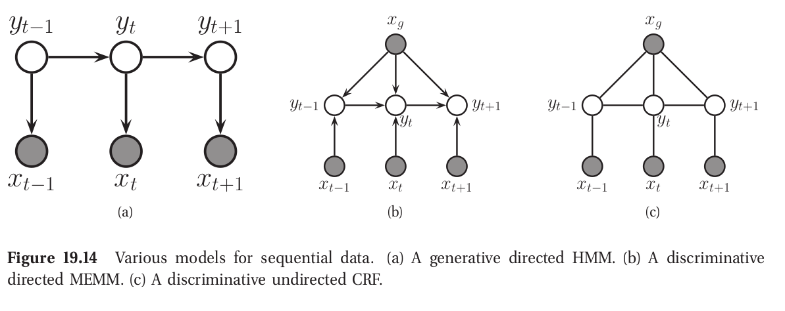

Fast Text Tagging with Conditional Random Fields
2024-09-05
Code” pot at
UniversityThe price of the [Pizza Margherita] is [10 dollars].
FOOD AMOUNTJim worked at Acme Corp. near the beautiful London Bridge.
PER O O ORG ORG O O O LOC LOC EOSJim worked at Acme Corp. near the beautiful London Bridge.
NOUN VERB PREP NOUN NOUN PREP DET ADJ NOUN NOUN EOS\[\begin{aligned} \text{Labels}:\quad \mathbf{y} &= \{y_1, y_2, \ldots, y_T\}\\ \text{Features}:\quad \mathbf{x} &= \{\mathbf{x}_1, \mathbf{x}_2, \ldots, \mathbf{x}_T\} \end{aligned}\]
Abstract tasks have taken over lower level tasks
1 Source: https://paperswithcode.com/datasets

def tokens_to_features(tokens, i):
features = {
"bias": 1.0,
"word": tokens[i].lower(),
"prev_word": tokens[i-1],
"next_word": tokens[i+1],
"shape": re.sub("X", "\d", word)
}
return featuresimport datasets
def load_X_y(dataset_id="eriktks/conll2003", split="train"):
data = datasets.load_dataset(dataset_id)
sentences = data[split]["tokens"]
labels = data[split]["ner_tags"]
label_names = data[split].features["ner_tags"].feature.names
X, y = [], []
for (sentence, label_seq), i in enumerate(sentences, labels):
X.append(tokens_to_features(tokens, i))
y.append([label_names[label_id] in label_seq])
return X, yimport sklearn_crfsuite
from sklearn_crfsuite import metrics
X, y = load_X_y(split="train")
crf = sklearn_crfsuite.CRF(
algorithm='lbfgs',
c1=0.5,
c2=0.01,
)
crf.fit(X, y)Iter 1 time=0.33 loss=232365.88 active=86384 feature_norm=1.00
Iter 2 time=0.17 loss=217017.29 active=84206 feature_norm=3.45
Iter 3 time=0.17 loss=161378.43 active=83724 feature_norm=2.99
...
Iter 99 time=0.17 loss=1255.7 active=38787 feature_norm=252.98
Iter 100 time=0.16 loss=1255.7 active=38790 feature_norm=252.96
Total seconds required for training: 23.856Number of active features: 38790 (86687)
Number of active attributes: 24451 (68166)
Number of active labels: 9 (9)# Worst case (all_possible_states=True and all_possible_transitions=True)
features = (number of attributes * number of labels)
+ (number of labels * number of labels)X_test, y_test = load_X_y(split="test")
y_pred = crf.predict(X_test)
print(metrics.flat_classification_report(y_test, y_pred)) precision recall f1-score support
B-LOC 0.852 0.837 0.844 1668
I-LOC 0.741 0.623 0.677 257
B-MISC 0.796 0.758 0.777 702
I-MISC 0.647 0.653 0.650 216
B-ORG 0.778 0.722 0.749 1661
I-ORG 0.666 0.734 0.699 835
B-PER 0.839 0.853 0.846 1617
I-PER 0.879 0.952 0.914 1156
micro avg 0.805 0.804 0.805 8112
macro avg 0.775 0.766 0.769 8112
weighted avg 0.805 0.804 0.804 8112word: one-hot encoding of current word+1:word: one-hot encoding of next wordword lengthword shape: $1,230 ->
$x,xxxword.isupper()
Illustration: Murphy (2012)
Source: Ng and Jordan (2001);Larochelle (2013)
\[ p(a,b,c) = p(c | a, b)p(b | a)p(a) \]
word\[ \ell(\theta) = \sum_{t=1}^{T} \log p\left(\mathbf{y}_t \mid \mathbf{x}_t ; \theta\right) + c_1 \lVert \theta \rVert_1 + c_2 \lVert \theta \rVert_2 \]
| Framework | Algorithm | CoNLL-2003 | FIN | BioNLP2004 | BC5CDR | MultiCoNER |
|---|---|---|---|---|---|---|
| GliNER | 92.60 | - | 88.70 | - | ||
| Apache OpenNLP | Maximum Entropy | 80.00 | 63.24 | - | - | - |
| Stanford CoreNLP | CRF | 85.18 | 55.25 | 73.26 | 85.22 | 19.39 |
| Flair | LSTM-CRF | 90.35 | 74.23 | 71.64 | 90.27 | 56.27 |
| spaCy | CNN-large | 85.64 | 54.71 | 66.17 | 79.66 | 35.82 |
| Hugging Face | roberta-base | 89.92 | 63.18 | 66.56 | 87.08 | 55.21 |
| Hugging Face | bert-base-cased | 90.09 | 39.53 | 69.46 | 85.14 | 56.64 |
| OpenAI | GPT-4 | 62.74 | 36.70 | 41.32 | 55.67 | 33.61 |
Source: Keraghel, Morbieu, and Nadif (2024)
\(f(n) = O(n)\) \(\\[10pt]\) \(\text{if} \quad f(n) \leq C\cdot n \qquad \text{for all} \quad n>n_0.\)

| Model | Time per token |
|---|---|
| CRF | x |
| BERT | y |
| LSTM | z |